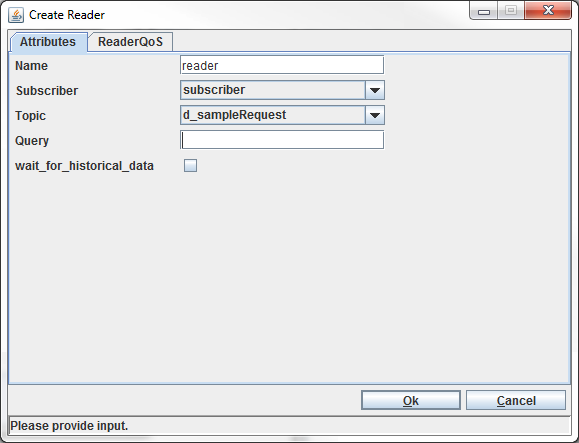
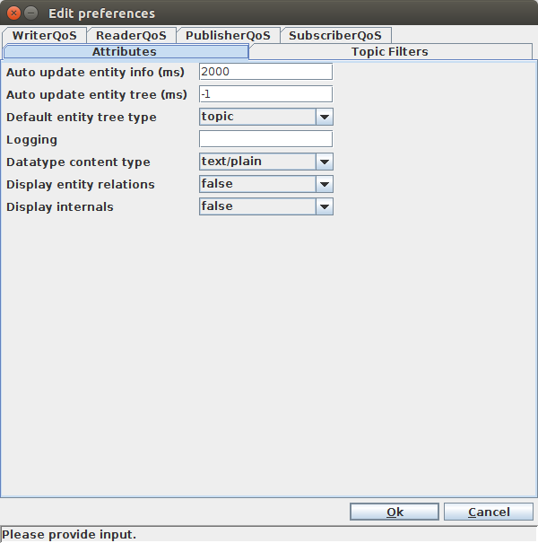

3.1. Starting and Stopping the Tuner
3.1.1. Starting
Vortex OpenSplice Tuner has been implemented in the Java language. The
supported platforms for the Tuner are listed in the Release Notes in
the section ‘Supported Platforms’. The Tuner will work on all
platforms that support JAVA (SAJ) SDK.
The Vortex OpenSplice Tuner provides a command line instruction for
specifying the domain config file that the tuner needs to connect to.
The option is
-uri=<URI>
An example command:
The following subsections provide the startup procedures for the
verified operating systems.
3.1.1.1. Solaris and Linux
Before starting Vortex OpenSplice Tuner, the Vortex OpenSplice environment
must be set correctly. This can be realized by starting a shell and
executing the release.com application located in the root directory
of the OpenSplice installation (from now on referred to by
<OSPL_HOME>):
% . <OSPL_HOME>/release.com
Once the environment has been initialized correctly, the OpenSplice
DDS Tuner can be started by typing the following command in the shell:
When Vortex OpenSplice Tuner is started, the main window is presented to
the user. (See the illustration The Main Tuner Window.)
3.1.1.2. Windows

The Vortex OpenSplice environment must be set correctly before starting
the Vortex OpenSplice Tuner. This is done by opening a command prompt
and executing the release.bat file which is located in the root
directory of the Vortex OpenSplice installation (herein referred to by
<OSPL_HOME>).
% . <OSPL_HOME>/release.bat
The Vortex OpenSplice Tuner can be started by typing the following
command in the command prompt after the environment has been
initialized correctly:
The tuner’s main window is displayed when the Vortex OpenSplice Tuner is
started (see The Main Tuner Window).
3.1.2. Graphical User Interface Conventions
Some conventions are used for all graphical components of the
Vortex OpenSplice Tuner. Each window of Vortex OpenSplice Tuner provides a
menu bar. Each menu bar has three menus:
- File -
- The File menu always provides an option to close the window
(File > Close).
- Edit -
- The Edit menu provides facilities to interact with the
OpenSplice system.
- View -
- The View menu provides options to modify the view on data in
the window.
The View menu also provides an option to look up the main window.
This can be achieved by choosing View > Show main window in the menu
bar. This results in the displaying and focusing of the main window.
All windows are also equipped with a status bar. This status bar is
used by Vortex OpenSplice Tuner to provide the user with information
about the status or to report feedback about actions taken by the
user. The status bar is colored yellow when a warning message is
displayed and colored red when an error message is displayed.
Sometimes a status bar also contains a ‘light’, which is located in
the right corner of the status bar. This light provides information
about the availability of the entities where the window depends on.
If these entities are available, the light is colored green. If not,
then it is colored red.
A lot of menu items in the menus of several windows of OpenSplice
Tuner can also be triggered using a combination of keyboard keys
(short-cut). If such a keyboard shortcut is available for a specific
menu item, it is displayed at the right side of the menu item in
blue. The specific keyboard shortcuts are not discussed in this
manual.
3.1.3. Main Window
When Vortex OpenSplice Tuner is started the main window appears.
The Main Tuner Window
The title bar displays Vortex OpenSplice Tuner (<connected_domain_uri>).
The entity tree in the main window displays the entities in
OpenSplice as well as their relationships. The selected view
determines which relationships are displayed
(see Entity Relationships). The current view name is displayed
in the bottom right corner of the entity tree.
The status bar provides information about the status of the window or
about the action that is currently being executed. The status bar of
the main window is equipped with a ‘light’ (located at the right
corner of the status bar). This ‘light’ provides information about
the connection. If OpenSplice Tuner is currently connected to a
OpenSplice domain, it is colored green (as in the illustration
above). If not, it is colored red.
The Window List
The window list of the main window is a pull-down menu, which
contains all OpenSplice Tuner windows. The values in the
window list match the titles of the windows. If an entry in the list
is selected, the associated window is opened and it receives the
focus. When a new window is opened, it is added to the window list;
it is removed from this list when the window is closed again.
3.1.4. Shutdown
OpenSplice Tuner can be exited at any time by choosing File > Exit in
the menu bar of the main window or by clicking the ‘close’ (X) icon at
the top-right corner of the main window.
When OpenSplice Tuner is currently connected to a specific OpenSplice
domain (see Connection Management), it asks for confirmation to
close that connection.
The Confirm Exit Dialog
3.2. Connection Management
To be able to monitor and control the OpenSplice system, OpenSplice
Tuner needs access to a specific domain. This section describes the
various connection types that are supported by OpenSplice Tuner,
including how a connection to a specific OpenSplice domain and node
can be opened and how a connection can be closed.
3.2.1. Connection Types
OpenSplice Tuner offers the possibility to connect to a specific
domain on a specific node in two different ways:
- Local -
- OpenSplice Tuner connects to a specific domain that
is available on the same node as where it is started. For local
connections, OpenSplice Tuner connects to an OpenSplice domain using
the Java Native Interface (JNI). This is the default connection type.
- Remote -
- OpenSplice connects to a specific domain that is available
on a node in the same network as the node where it started. For
remote connections, OpenSplice Tuner connects to a OpenSplice domain
using the Simple Object Access Protocol (SOAP).
The Tuner determines the connection type based on the given domain
URI/URL in the connection dialog (see Open a Connection).
 A local connection is preferred over a remote connection
because communication with OpenSplice is faster and does not cause any
network traffic. It is therefore less intrusive than a remote
connection and it improves the performance of OpenSplice Tuner.
A local connection is preferred over a remote connection
because communication with OpenSplice is faster and does not cause any
network traffic. It is therefore less intrusive than a remote
connection and it improves the performance of OpenSplice Tuner.
By using a remote connection, OpenSplice Tuner also supports
monitoring and controlling OpenSplice on embedded platforms that do
not provide a graphical user interface (VxWorks for example)
3.2.2. Open a Connection
OpenSplice Tuner can only open a connection when it is not currently
connected.
To open a connection, choose File > Connect in the menu
bar. This action opens a dialog that asks the user to provide
a domain URI.
This domain URI can represent any of the following values:
a: Integer Domain ID (e.g. 1)
b: Domain URI (e.g. file:///home/Prismtech/ospl.xml)
c: SOAP service URL (e.g. http://192.168.1.20:8000)
Value b can be selected from a file chooser. Click the Browse
button to open a file chooser.
- Values a and b imply a local connection type.
- Value c implies a remote connection type.
When value c is used, make sure that the OpenSplice Control &
Monitoring SOAP (CMSOAP) service is running at the supplied SOAP
service URL.
When the OK button is clicked, OpenSplice Tuner tries to open a
connection to the domain that is associated with the supplied domain
URI. If the domain exists, OpenSplice Tuner connects to that domain.
If it does not exist, the message ‘Supplied URI not available’ appears
in the status bar of the dialog window.
When domain URI value c is used and the CMSOAP service and/or
OpenSplice is not running at the specified node URL, the message
‘IOException: Connection refused’ appears in the status bar of the
dialog window.
The Connect operation can be cancelled by clicking the Cancel
button. This makes the dialog window close. OpenSplice Tuner is still
disconnected afterwards.
3.2.2.1. Connection History
OpenSplice Tuner keeps a history of connections. It remembers four
connections per connection at most. The connection history is located
in the File menu between the Disconnect and Exit menu items.
Connection History
When a specific connection is displayed in the history in the File
menu it does NOT mean that it is currently connectable.
A connection in the history list can be opened by clicking File >
<connection> in the menu bar. If the connection is available, it is
opened. The result of the action is displayed in the status bar of
the main window.
3.2.3. Close a Connection
Once a connection is opened, it can be closed again. This can be
achieved by clicking File > Disconnect in the menu bar. The result of
the disconnect action is displayed in the status bar of the main
window.
3.3. Entity Information
To be able to use the OpenSplice system for the distribution of data,
applications need to create all kinds of entities. Entities are, for
instance: domain participants, subscribers and publishers. The
OpenSplice system administers these entities. Each entity type has
its own characteristics (attributes, status, QoS policies, data type)
and relations to other entities. OpenSplice Tuner provides facilities
to observe entities in the OpenSplice system and browse over their
(mutual) relationships using different views (see Entity Relationships).
OpenSplice Tuner displays internal OpenSplice entities. Most entities
map on a DCPS entity, but some entities do not. The table below provides
an overview of OpenSplice entities that can be shown by OpenSplice Tuner
as well as how they map on DCPS entities.
Mapping of OpenSplice Entities on DCPS Entities
| DCPS Entity |
OpenSplice
Entity |
Description |
|---|
| DomainParticipant |
Participant |
A DCPS DomainParticipant is
presented as a Participant
in OpenSplice. |
| Service |
|
Represents a service of OpenSplice.
A service is a special OpenSplice
application that adds functionality
to OpenSplice. Services that are
currently available are:
Networking - Realizes the
communication between separate
OpenSplice nodes.
Durability - Realizes the durable
properties of data in a OpenSplice
system.
CMSOAP - service that allows a
remote connection of OpenSplice
Tuner to the current OpenSplice node.
|
| Topic |
Topic |
A DCPS Topic is also presented as
a Topic in OpenSplice. |
| Partition |
Partition |
DCPS does not specify a Partition as
an Entity, but as a policy in the
quality of service of a Publisher and
a Subscriber. In OpenSplice, however,
it is presented as a Partition
entity. |
| Subscriber |
Subscriber |
A DCPS Subscriber is also presented
as a Subscriber in OpenSplice. |
| Publisher |
Publisher |
A DCPS Publisher is also presented
as a Publisher in OpenSplice. |
| |
Reader |
OpenSplice specifies a Reader
as an abstract base Entity
for a DataReader and Query. |
| DataReader |
DataReader |
A DCPS DataReader is also presented
as a DataReader in OpenSplice. |
| ReadCondition |
Query |
A DCPS ReadCondition is presented
as a Query in OpenSplice. |
| |
NetworkReader |
Internal Reader type for the
networking service. |
| DataWriter |
Writer |
A DCPS DataWriter is presented
as a Writer in OpenSplice. |
| ContentFilteredTopic |
View +
Topic +
Query |
A DCPS ContentFilteredTopic is
presented as a combination of
a View, Topic and a Query. |
| MultiTopic |
View +
Join +
Topics
(+ Query) |
A DCPS MultiTopic is
presented as a combination of
a View, Join, multiple Topics and
possibly a Query. |
| |
WaitSet |
Represents an internal WaitSet
object |
To observe entity information, right-click on a specific entity in
the entity tree of the main window. This will trigger a popup menu
that displays the possible actions for that entity. Choose Display
Entity to observe the selected entity.
Display Entity Information
This action will create a new window with entity information. This new
window consists of a menu bar and a certain number of tabs. These
tabs will be explained in the following sections.
3.3.1. Attributes
This tab is available for all entities. Each entity type has its own
attributes. Some of them are available for all entity types, others
only for that specific entity type.
Entity Attributes
Attributes that are available for every entity type are:
Kind - the entity type
Name - the entity name
Handle index and serial - the internal identification of the entity
Address - the heap memory address of the entity
Enabled - shows the state of the entity
Both handle index and serial as well as address are considered as
internals and therefore are only displayed when the Display internals
configuration option in the OpenSplice Tuner preferences is set to
true (see Preferences).
The illustration above shows the attributes for a Topic entity. Besides the
default attributes, a Topic entity contains two extra attributes:
Key list - represents the key list of the Topic (comma separated)
Type name - represents the type name of the Topic
3.3.2. Status
Some entity types have a status. As the name says, it provides
information about the communication status of the entity. Entity
types that have a communication status are:
- Subscriber
- Topic
- DataReader
- Writer
The status attributes depend on the type of the entity. The status of
a specific entity can be resolved by clicking the Status tab in the
entity information window. The illustration below shows the status
attributes of a Topic entity.
Entity Status
The status information can be updated automatically. This can be
achieved by setting the Auto update entity information configuration
option in the OpenSplice Tuner preferences.
3.3.3. QoS
OpenSplice relies on the use of Quality of Service (QoS). A QoS is a
set of characteristics that controls some aspects of the behaviour of
OpenSplice.
QoS is comprised of individual QoS policies and is associated with a
specific entity. The QoS policies depend on the type of the entity.
Entity types that are equipped with a QoS are:
- Participant
- Topic
- Subscriber
- Publisher
- DataReader
- Writer
The following subsections describe how the QoS of a
specific entity can be inspected and how to modify a QoS.
3.3.3.1. Inspect QoS
The illustration below shows the Quality of Service (QoS) of a specific
Topic in OpenSplice. The QoS of a specific entity is displayed in the
QoS tab of the entity information window. The QoS of the entity can be
inspected by clicking the QoS tab in the entity information window.
To refresh the QoS of the entity, the Get button (located at the
bottom-left corner of the QoS tab) can be clicked when the QoS
tab is selected.
Entity QoS
3.3.3.2. Modify QoS
It is possible to modify the Quality of Service (QoS) settings
of a specific entity. OpenSplice Tuner allows modification of the QoS
settings when the QoS tab of the entity information window is
selected. Once an entity is enabled, not all QoS policies can be
modified any more. The values of the QoS policies that are not
editable are colored gray. When clicking on a value of a QoS policy
that is currently editable (one of the cells located in the Value
column), the contents of that cell can be edited. During
the editing, the contents of the cell are constantly validated. If
the current input is valid, the cell is colored orange and if not, it
is colored red. To confirm the input, press Enter. The cell is then
colored white again. If the current input is not valid, it cannot be
confirmed. To cancel the editing of the cell, press the Esc key. The
content of cell is reset to the value it had before the cell was
edited and the cell is colored white again.
When all QoS policies have the desired value, the QoS can be applied
to the entity by clicking the Set button (located at the bottom-right
corner of the QoS tab. The result of the action is displayed in the
status bar of the window.
 The modification of a specific Quality of Service influences the
behaviour of the entity it belongs to.
The modification of a specific Quality of Service influences the
behaviour of the entity it belongs to.
3.3.4. Data Type
Some entity types have a data type or relate to one. The data type
can be observed when the Data type tab is selected in the entity
information window.
Entity Data Type
Entity types that provide a data type are:
This tab displays the data type name, and the data type definition in
plain text format. To make the text more readable, the data type
representation can be changed to HTML text format. This can be achieved
by choosing View > Data type representation > <Representation> in the
Menu Bar.
Entity Data Type Representation
The default value of the data type representation can be modified.
This can be achieved by setting the Datatype content type
configuration option in the OpenSplice Tuner Preferences.
Plain text takes less processing time than HTML, but
the HTML version is easier to read.
3.3.5. Statistics
Some entity types keep track of statistical information. This
information can be monitored in OpenSplice Tuner by selecting the
Statistics tab in the entity information window. The
statistical information can be updated automatically. This can be
achieved by setting the Auto update entity information configuration
option in the OpenSplice Tuner preferences.
The following entities have statistics:
- Reader
- Writer
- Durability
- Networking
- CMSOAP
Entity Statistics
As well as monitoring statistical information, OpenSplice Tuner also
provides facilities to reset (parts of) this information. When
right-clicking on a specific row in the table of the Statistics tab, a
popup menu with two options appears (see illustration above). The first
option results in a reset of the selected counter. The second option results
in a reset of all statistical information of the entity.
3.4. Entity Relationships
To be able to observe how entities work together, it is necessary to
observe their (mutual) relationships. OpenSplice Tuner provides three
different approaches to observe these relationships:
- Participant view -
- Displays participant entities of the local node as
top-level entities
- Topic view -
- Displays topic entities as top-level entities
- Partition view -
- Displays partition entities of the local node as
top-level entities
Each view consists of a tree of entities. The layout of the entity
tree in the main window is determined by the selected view and the
available entities in OpenSplice.
To change the view on entity relations, choose View > <View type>
in the menu bar. The default view on startup is determined
by the Default entity tree type configuration option in the
OpenSplice Tuner Preferences.
Choose Entity View
3.4.1. Enable and Disable Displaying Relationships
By default, only top-level entities are displayed in a view. This
means, for instance, that the topic view only displays topic entities.
It is also possible to observe all relationships of the top-level
entities to other entities. When all relationships need to be
displayed, choose View > Display Entity relations in the menu bar
(see Choose Entity View).
Besides enabling or disabling the displaying of all
entity relations, it is also possible to enable or disable these
relations on entity level. This can be done by right-clicking on
an entity in the entity tree and then choosing Hide Entity relations
to disable display and Display Entity relations to enable
display.
Enable and Disable Entity Relations
When the Display Entity relations check box is enabled in the View
menu (see Choose Entity View), all entity relations are displayed.
By selecting Hide Entity relations on a specific entity, the displaying
of relations can be disabled for that specific entity. That will color
the concerning entity gray in the entity tree.
The other way around is also possible. When the Display Entity relations
check box is unchecked in the View menu, no entity relations are displayed.
By selecting Display Entity relations on a specific entity, the
displaying of the relations is enabled for that specific entity. That
will color the concerning entity green in the entity tree.
Disabling entity relations and only enabling the relations that need
to be observed makes OpenSplice Tuner less intrusive for OpenSplice.
3.4.2. Refresh Relationships
Once the relationships have been resolved, by default they are not
kept up to date.
Updates can be applied in two ways.
- By choosing Edit > Refresh entity tree in the menu bar the entire
tree is refreshed.
- By right-clicking on an entity in the tree and choosing Refresh
Entity relations the relations of that specific entity can be
refreshed (Enable and Disable Entity Relations).
Refreshing entity relations on entity level rather then a complete
refresh of the tree takes less processing time and is less intrusive
for OpenSplice.
Entity relations can also be updated automatically. This can be
achieved by setting the Auto update entity tree configuration option
in the OpenSplice Tuner Preferences.
3.5. Data Injection and Consumption
OpenSplice Tuner provides facilities for data injection and
consumption. Data injection can be accomplished in several ways:
- using an existing writer
- using a self-created writer
- using a self-created reader-writer
Creating a writer to inject data can be realized by creating a
publisher followed by creating a writer or by creating a
reader-writer (see Data Injection and Consumption).
For consuming data, the following options are available:
- using an existing reader
- using a self-created reader
- using a self-created reader-writer
- inspecting the data in an existing reader database (consume data
by making a snapshot of an existing reader)
- inspecting the history cache of an existing writer (consume data
by making a snapshot of the history of an existing writer)
The following sections describe how to perform these tasks.
3.5.1. Creating a Publisher
One way to inject data in OpenSplice is to create a publisher and
writer. A publisher can be attached to one or more partitions in the
domain where OpenSplice Tuner is currently participating.
Main Window Edit Menu
To create a publisher, choose Edit > Create Publisher in the menu bar
of the main window (shown above), or right-click on the OpenSplice Tuner
participant in the entity tree and then select the Create
Publisher item (see illustration below).
OpenSplice Tuner Participant Actions
Both of these actions will result in the display of the
Create Publisher dialog.
Create Publisher dialog
The value provided in the Name field becomes the name of the publisher
(as displayed in the entity tree).
The Qos settings of the publisher can be set on the PublisherQos tab.
The Partition name field on the PublisherQos tab determines the
publisher’s partition(s).
To attach the publisher to multiple partitions, the comma (,)
can be used as a separator and the asterisk (*) can be used
as a wild card. Partitions that do not already exist are created
in OpenSplice, except for parts of the expression that contain
a wild card.
For example, the name part*,abc makes the publisher publish in all
available partitions that start with part including part itself
and also in partition abc (the partition abc will be created if
it does not already exist in the connected OpenSplice domain).
The Presentation fields on the PublisherQos tab determines the
publisher’s Presentation policy setting. This policy is also an RxO policy,
thus it affects QoS compatibility matching for readers and writers.
Additionally, Tuner supports coherent and ordered access. So if coherent_access
is true, and the access_scope is TOPIC or GROUP, then the option to publish
coherent sets will be available when selecting the publisher. See
Publishing Coherent Sets.
When the OK button is clicked, the input is validated. If the input
is correct, the publisher is created. The newly-created publisher
will appear in the entity tree (when entity relations are enabled;
see Enable and Disable Displaying Relationships). If the input is
not correct, an error message will appear in the status bar of
the dialog box.
The Create publisher action can be cancelled by clicking the Cancel
button. In this case, no publisher will be created.
3.5.2. Creating a Writer
A writer can only be created if one or more publishers have already
been created. A writer can be created by choosing Edit > Create
Writer in the menu bar (see Main Window Edit Menu) or right-clicking
on a created publisher entity in the tree then choosing the
Create Writer item.
Both of these actions will result in the display of the dialog box
shown below.
Create Writer dialog
The Name field determines the name of the
writer (as displayed in the entity tree). The Publisher field
determines to which publisher the writer will be attached (determines
the partition(s) the writer will write its data in). The Topic field
determines which topic the writer will be able to write.
By default the QoS settings of the Writer are copied from the Topic
it writes. However, it is also possible to override these settings by
specifying its own QoS settings/profile (see QoS Profiles) in the
WriterQoS tab.
When the OK button is clicked, the input is validated. If the input
is correct, the writer is created. The newly-created writer
will appear in the entity tree (when entity relations are enabled;
see Enable and Disable Displaying Relationships).
If the input is not correct, an error message will appear in the
status bar of the dialog window.
The Create writer action can be cancelled by clicking the Cancel
button. In this case, no writer will be created.
3.5.3. Creating a subscriber
One way to consume data from OpenSplice is to create a subscriber and
a data reader. A subscriber can be attached to one or more partitions
in the domain where OpenSplice Tuner is currently participating.
To create a subscriber, choose Edit > Create Subscriber in the menu
bar of the main window (see Main Window Edit Menu) or right-click
the SPLICE Tuner participant in the entity tree then choose the Create
Subscriber item.
Both of these actions will result in the display of the dialog box
shown below.
Create Subscriber dialog
The value provided in the Name field becomes the name of the
subscriber (as displayed in the entity tree). The Qos
settings of the subscriber can be set on the SubscriberQos tab. The
Partition name field in the SubscriberQos tab determines the
subscriber’s partition(s).
To attach the subscriber to multiple partitions, the comma (,)
can be used as a separator and the asterisk (*) can be used as a
wild card. Partitions that do not already exist are created in
OpenSplice, except for parts of the expression that contain a wild
card.
The Presentation fields on the PublisherQos tab determines the
publisher’s Presentation policy setting. This policy is also an RxO policy,
thus it affects QoS compatibility matching for readers and writers.
Additionally, Tuner supports coherent and ordered access. So if coherent_access
is true, and the access_scope is TOPIC or GROUP, then the option to read
available data on all the subscriber’s readers will be available when selecting
the subscriber. See Access Data On Readers.
When the OK button is clicked, the input is validated. If the input
is correct, the subscriber is created. The newly-created subscriber
will appear in the entity tree (when entity relations are enabled;
see Enable and Disable Displaying Relationships).
If the input is not correct, an error message will appear
in the status bar of the dialog box.
The Create subscriber action can be cancelled by clicking the
Cancel button. In this case, no subscriber will be created.
3.5.4. Creating a Reader
A reader can only be created if one or more subscribers have already
been created.
A reader can be created by choosing Edit > Create Reader
in the menu bar (see Main Window Edit Menu) or by right-clicking on
a created subscriber entity in the tree then choosing the Create Reader
item.
Both of these actions will result in the display of the dialog box
shown below.
Create Reader Dialog

The Name field determines the name of the reader (as displayed in the
entity tree).
The Subscriber field determines to which subscriber the
reader will be attached (determines the partition(s) the reader will
consume data from).
The Topic field determines which topic the reader
will be able to consume.
The Query field can be used to specify a
query for the reader so only data that matches the query will be
consumed.
The WaitForHistoricalData field determines whether the
Reader will wait for historical data to arrive during creation
(maximum of 30 seconds). In this case the Reader will still receive
historical data.
By default the QoS settings of the Reader are copied from the Topic
it reads. However, it is also possible to override these settings by
specifying its own QoS settings/profile (see QoS Profiles)
in the ReaderQoS tab.
When the OK button is clicked, the input is validated. If the input
is correct, the reader is created. The newly-created reader
will appear in the entity tree (when entity relations are enabled;
see Enable and Disable Displaying Relationships).
If the input is not correct, an error message will appear in the
status bar of the dialog window.
The Create reader action can be cancelled by clicking the Cancel
button. In this case, no reader will be created.
3.5.5. Creating a ReaderWriter
The creation of a publisher, writer, subscriber and reader can be
simplified by directly creating a reader-writer. This action creates
a publisher, writer, subscriber and reader in one action.
There are two possible ways of creating a reader-writer. The
reader-writer can be created by using a partition expression or by
using a single partition. In both cases a window will appear where
the reader-writer attributes and Qos settings of the publisher,
writer, subscriber and reader can be changed.
3.5.5.1. Partition Expression
The creation of a reader-writer by using a partition expression
allows a reader-writer to inject and consume in multiple partitions.
To create such a reader-writer, choose Edit > Create Reader-Writer >
Partition expression in the menu bar of the main window (see
Main Window Edit Menu) or right-click on the SPLICE Tuner participant
in the entity tree then choose the
Create Reader-Writer > Partition expression item.
Both of these actions will result in the display of the dialog box
shown below.
Create Reader-Writer (Partition expression) dialog
The value provided in the Partition expression field determines
the publisher and subscriber partition(s). To attach them to multiple
partitions, the comma (,) can be used as separation and the asterisk
(*) can be used as wild card. Partitions that do not exist are created
in OpenSplice, except for parts of the expression that contain a wild card.
The Topic field determines the topic the reader-writer will read and
write.
The WaitForHistoricalData field determines whether the Reader
will wait for historical data to arrive during creation (maximum of
30 seconds). In this case the Reader will still receive historical
data.
By default the QoS settings of the Reader/Writer are copied from the
Topic it reads/writes. However, it is also possible to override these
settings by specifying its own QoS settings/profile (see
QoS Profiles) in the WriterQoS and ReaderQoS tabs.
When the OK button is clicked, the input is validated. If the input
is correct, the reader-writer is created. The newly-created
publisher, writer, subscriber and reader will appear in the entity tree
(when entity relations are enabled;
see Enable and Disable Displaying Relationships).
The reader-writer window is also presented. If the input is not correct,
an error message will appear in the status bar of the dialog window.
The Create action can be cancelled by clicking the Cancel button.
In this case, no publisher, subscriber, reader and writer will
be created.
See also Consuming Data Using a Reader-Writer.
The dialog window for creating a reader-writer using a partition
expression can also be summoned by right-clicking a topic entity in
the entity tree and choosing Create Reader-Writer > Partition
expression). There is one difference between the two actions mentioned
above: the Topic field will only contain the selected topic in the
entity tree instead of all topics in the domain.
3.5.5.2. Existing Partition
The creation of a reader-writer by using a single partition allows a
reader-writer to inject and consume in one already existing
partition.
To create such a reader-writer, choose Edit > Create
Reader-Writer > Existing Partition in the menu bar of the main window
(Main Window Edit Menu) or right-click on the SPLICE Tuner participant
in the entity tree then choose the Create Reader-Writer > Existing Partition
item.
Both of these actions will result in the display of the dialog box
shown below.
Create Reader-Writer (existing partition) dialog
The value provided in the Partition field determines the
publisher and subscriber partition.
The Topic field determines the topic the reader-writer will read and
write.
The WaitForHistoricalData field determines whether the Reader
will wait for historical data to arrive during creation (maximum of
30 seconds). In this case the Reader will still receive historical
data.
By default the QoS settings of the Reader/Writer are copied from the
Topic it reads/writes. However, it is also possible to override these
settings by specifying its own QoS settings/profile (see
QoS Profiles) in the WriterQoS and ReaderQoS tabs.
When the OK button is clicked, the input is validated. If the input
is correct, the reader-writer is created. The newly-created
publisher, writer, subscriber and reader will appear in the entity
tree (when entity relations are enabled;
see Enable and Disable Displaying Relationships).
The reader-writer window is presented to the user. If the input
is not correct, an error message will appear in the status bar
of the dialog window.
The Create action can be cancelled by clicking the Cancel button.
In this case, no publisher, subscriber, reader and writer will be created.
The dialog for creating a reader-writer for a single partition
can also be summoned in two other ways.
The first one is right-clicking a topic entity in the entity tree and
choosing Create Reader-Writer > Existing Partition. (Note that the
Topic field will only contain the selected topic in the entity tree
instead of all topics in the domain.)
The second one is right-clicking a partition entity in the
entity tree and choosing Create Reader-Writer > Existing Partition.
(Note that the Partition field in the dialog window will only contain
the selected partition in the entity tree instead of all partitions in
the domain.)
3.5.6. Creating a Snapshot of a Reader Database
OpenSplice Tuner also provides facilities to browse through data in
an existing application reader database without influencing it. This
can be achieved by making a ‘snapshot’ of that database. Create a
snapshot by right-clicking on the reader that needs to be examined
then choosing Make database snapshot.
Create Reader Snapshot
The Make database snapshot action makes OpenSplice Tuner create a
snapshot of the contents of that specific database and open a reader
snapshot window that allows browsing through the contents of the
database.
3.5.7. Creating a Snapshot of Writer History Cache
OpenSplice Tuner also provides facilities to browse through data in
the history cache of an existing application writer without
influencing it. This can be achieved by making a ‘snapshot’ of the
history of the writer. Create a snapshot by right-clicking on the
writer that needs to be examined then choosing Make history snapshot.
Create Writer Snapshot
The Make history snapshot action makes OpenSplice Tuner create a
snapshot of the history of that specific writer and open a writer
snapshot window.
Whether or not there is a history available for a specific writer
depends on the Quality of Service settings of that writer.
3.5.8. Delete Entity
Self-created entities can also be deleted. This can be achieved by
right-clicking the entity to delete in the entity tree followed by
selecting the Delete Entity item in the popup menu that appears,
or by choosing Edit > Delete Entity in the menu bar.
When the entity is deleted, it is also removed from the entity tree.
If the entity could not be deleted, the reason is displayed in the
status bar of the main window.
3.5.9. Injecting Data
If the correct entities are available, data can be injected into
OpenSplice. The methods to do this are explained in the following
subsections.
3.5.9.1. Injecting Data Using a Writer
Data can be injected using an existing application writer or a
self-created writer. To create or modify and inject data, OpenSplice
Tuner offers a writer window. Such a window can be opened by
right-clicking a writer entity in the entity tree followed by
choosing the Write data item.
The Writer Window
The window consists of:
- Title Bar -
- Displays the title. Its format is:
<topic_name>@<partition(s)> > Writer.
- Menu Bar -
- Contains the File, Edit and View menus.
- User Data View -
- View that consists of a table that displays the data
the writer can write.
- Button Panel -
- Contains buttons to register, unregister, write and
dispose data in OpenSplice.
- Status Bar -
- Displays the current action as well as the status of the
writer.
The user data view displays all fields in the data, which depend on
the data type of the topic that the writer is able to write. It
consists of three columns.
The first column displays the type of a field in the data.
The second column displays the name of a field in the data. Nested
fields in the data are separated by a dot. The fields that are part
of the key of the topic are colored green.
The third column displays the current value of the field. When the
window is opened, they have the default value (the default value
depends on the type of the field).
The field type names are not the same as how they have been
specified in IDL. They are displayed as internal OpenSplice types.
This means (in most cases) that a prefix c_ is added and unsigned
is transformed in u. For example: the type long in IDL becomes
c_long and unsigned long becomes c_ulong.
To edit the value of a field, click the Field value of that field.
The field is colored orange while editing (see illustration). The
writer window starts an editor when a specific field value is clicked.
The editor type depends on the Field type. For primitive types like long
and float as well as for strings, a simple text field is created. To
confirm the input in a text field, simply press the Enter key. For
enumeration and boolean types, a pull-down menu with the possible
options appears. The input in a pull-down menu does not have to be
confirmed.
Writer Window Edit Field Value
During the editing, the value is constantly validated. When the
current value of the Field value is not valid, the field is colored
red (see illustration) and the input cannot be confirmed. To cancel the
editing, press the Esc key. The value of the field is reset to the
value it had before the editing began.
Writer Window Input Error
When all fields are set to the desired value, the data can be
injected into OpenSplice.
The Register button in the button panel (in The Writer Window)
or Edit > Register instance in the menu bar will inform OpenSplice that
the particular instance will be modified, meaning that OpenSplice will
handle the instance more efficiently.
To undo this the Unregister button can be clicked or Edit > Unregister
instance in the menu bar. This will inform OpenSplice that the particular
instance will not be modified any more.
Data can be injected by clicking the Write button in the button panel
or by choosing Edit > Write in the menu bar. When the current input
is not valid as shown in Writer Window Input Error, the data cannot
be written. A write action will result in the error message in the
status bar of the writer window: ‘Data could not be written, because
input is not valid’.
When a field value has not been confirmed, but the current input is
valid, the write action will result in a confirmation of the input
followed by a write action.
If data was successfully written, the message ‘Data written’ appears
in the status bar.
Besides writing data, it can also be disposed. Data in OpenSplice
can be disposed by clicking the Dispose button in the button panel
or by choosing Edit > Dispose in the menu bar. The mechanism of the
dispose is the same as the one for the write action.
The write and dispose action can also be combined. This can be done
by clicking the WriteDispose button or Edit > WriteDispose in the
menu bar. This will first write the data and then dispose it.
Data that is injected will also arrive at data readers of other
running OpenSplice applications that are subscribed to this data.
This also applies to disposing of data.
The Entity information of the Writer associated with the Writer
window can be resolved by choosing File > Show Writer info.
3.5.9.2. Injecting Data Using a Reader-Writer
The creation of a reader-writer results in the popup of a
reader-writer window. The reader-writer window is a
combination of a reader window and a writer window.
The Reader-Writer Window
The reader-writer window provides facilities for both injecting
and consuming data. It consists of:
- Title Bar -
- Displays the title of the window. The format is
<topic_name>@<partition(s)> | Reader-Writer (<mode>)
- Menu Bar -
- The menu bar for the window.
- Sample information Table -
- Displays sample information of a specific sample.
- Data Table -
- Consists of three tabs. The reader and writer are combined using
these three tabs. The List and Single tabs belong to
the reader and the Writer tab belongs to the writer.
- Button Panel -
- Contains a combination of reader and writer window buttons.
- Status Bar -
- Displays information about the current action and the
state of the reader-writer.
The Writer tab of the user data view is selected in
The Reader-Writer Window. It looks the same as the user data view
of the writer window in The Writer Window, but for collection types
a right-click menu is available.
When you right-click on a field value cell which contains collection
type data and then choose the Add Details, a new window will open
(see Detailed Writer tab), which looks the same as the writer window
(which is described in Injecting Data Using a Writer) except that the
Write and Dispose buttons are replaced by a
single Save button.
The illustration below shows a sample with five elements: id and
four sequence fields named text, iVector, fVector and
pVector.
It is only possible in the Writer tab to edit primitive elements.
For collection types use the right-click menu item Add Details.
In the illustration, only the field name id can be edited in this window;
for all other types use the Add Details item, which opens a new
window with the content of the selected field type.
The next illustration shows the detailed information from the
pVector element.
Detailed Writer tab
This element again has a collection type vector
and thus the Add Details item is available to edit the content of
this element. The rest of the types can be edited in the current window.
When the Save button is clicked all filled-in data in the current
window will be saved and in the main reader-writer window the field value
of the edited field type will be updated.
For data types containing a two dimensional sequence, the process is similar.
The next illustration shows the field seq2D, which is a sequence of a sequence
of longs.
Detailed Writer tab
When editing two dimensional sequences such as this, Add details is first selected
in the main reader-writer window and the detail view of the first order sequence is
displayed. Add details must then be selected in this window’s writer tab to access
the detail window of the second order sequence, of the first order’s first index.
This second order sequence, seq2D[0] can then be filled in by typing in a value in
the editing cell on the writer tab, and clicking Save the value to an index of the
second order sequence. Index selection is done by clicking on a row in the List tab.
If no row is selected, Save will add a new index to the sequence.
When done editing the second order sequence, the window can be closed, and the next
index of the first order collection can be edited by selecting Add details again.
This will bring up the details window for seq2D[1].
Continuing in this fashion, the two dimensional sequence can be filled in. The current
table row in the List tab can be deselected by clicking outside of the table or by
pressing the Esc key.
To delete the contents of a collection, in the main reader-writer window, right click
on the collection in the writer tab, and select Clear details.
NOTE: You must click the Write button in the parent
reader-writer window for any changes made in the Writer tab
to be written to the system.
The facilities of the List and Single tabs of the user data view and
the Sample information view is the same as for the reader window.
The buttons in the button panel are a combination of the buttons in a
reader window and a writer window.
The <<, <, > and >> buttons are
described in Consuming Data Using a Reader-Writer.
Information about the Register, Write, WriteDispose and Unregister
buttons can be found in Injecting Data Using a Writer.
In contrast to a reader window and writer window, the closing of
a reader-writer window (this can be done by clicking the ‘close’ (X) icon
in the top-right corner of the window or by choosing File > Close in
the menu bar), will result in the automatic deletion of all entities
that concern the reader-writer (a publisher, writer, subscriber and a
reader).
Data that is injected will also arrive at data readers of other
running OpenSplice applications that are subscribed to this data.
This also applies to disposing of data.
The Entity information of the Reader and Writer associated with the
ReaderWriter window can be resolved by choosing respectively
File > Show Reader info or File > Show Writer info.
3.5.9.3. Detailed Reader-Writer window
The detailed reader-writer window is combination of a reader window
and a writer window.
Detailed Reader-Writer window
The detailed reader-writer window provides facilities for both
injecting and consuming data. It consists of:
- Title Bar -
- Displays the title of the window, which is the name of
the column from which the right-click was done that created the
window.
- Menu Bar -
- The menu bar for the window.
- Data Table -
- Consists of three tabs. The reader and writer are
combined using these three tabs. The List and Single tabs belong
to the reader and the Writer tab belongs to the writer.
- Button Panel -
- Contains a Save button.
- Status Bar -
- Displays information about the current action and the
state of the reader-writer.
The List tab of the user data view is selected in the illustration.
It looks almost the same as the user data view from the reader-writer window
except that the List tab user data always starts with an index column
displaying the index of that element inside the collection. In this
case the pVector element consists of three sub-elements each having
state, x, y, and vector fields. The vector field is
again a collection type and can thus be viewed in detail.
The facilities of the List and Single tabs of the user data view are
the same as for the reader-writer window.
3.5.10. Consuming Data
If the correct entities are available, data can be consumed from
OpenSplice. The methods to do this are explained in the subsections
below.
3.5.10.1. Consuming Data Using a Reader
Data can be consumed using an existing application reader or a
self-created reader. To consume data, OpenSplice Tuner offers a
reader window. Such a window can be opened by right-clicking an
entity in the entity tree in the main window followed by selecting
the Read data item. A reader window is shown below.
The Reader Window

The window consists of:
- Title Bar -
- Displays the title. Format is:
<topic_name>@<partition(s)> | Reader (<mode>).
- Menu Bar -
- Consists of File, Edit and View menus.
- Sample information View -
- Displays the sample information of one specific sample.
- User Data View -
- Displays the user data of the samples that have been
consumed by OpenSplice Tuner.
- Button Panel -
- Contains buttons to consume data from OpenSplice.
- Status Bar -
- Displays the current action as well as the status of the
reader.
Multiple views on consumed data are available in the window. Without
interaction, no data is consumed by OpenSplice Tuner. The buttons on
the button panel enable browsing through the data in the reader
database.
The > button (or Edit > Next in the menu bar) selects the next sample
that has been consumed in the List and Single tabs of the User data
view as well as the Sample information view. If the last consumed
sample is selected, a new sample is consumed from the reader
database. If no more samples are available in the reader database,
the notification ‘No more data available’ will appear in the status
bar.
The < button (or Edit > Previous) selects the previous sample in the
view. If the first one is selected, the notification ‘No more
previous data’ is displayed in the status bar. This action does not
trigger OpenSplice Tuner to consume data.
The >> button (or Edit > Next 50) selects the 50th sample counted
from the currently-selected one. The samples are consumed from the
reader database if fewer samples are available in the user
data view. If no more samples are available, the notification ‘No
more data available’ is displayed in the status bar.
The << button (or Edit > Previous 50) selects 50 samples back,
counted from the currently-selected one. If the first one is
currently selected, the notification ‘No more previous data
available’ is displayed in the status bar. If there are some previous
samples, but fewer than 50, the first sample is selected. This action
does not trigger OpenSplice Tuner to consume data.
Data that is consumed by OpenSplice Tuner from an application data
reader cannot be consumed any more by the application that created
that specific data reader.
The Entity information of the Reader associated with the Reader
window can be resolved by choosing File > Show Reader info.
3.5.10.1.2. User Data View
The user data view contains two tables that both offer a different
view: List table and Single table.
The Single table is capable of displaying one specific instance of
user data. This view displays all fields in the data, which depend on
the data type of the topic that the reader is able to consume. It
consists of three columns. The first column displays the type of a
field in the data. The second column displays the name of a field in
the data. Nested fields in the data are separated by a dot. The
fields that are part of the key of the topic are colored green. The
third column displays the current value of the field. When the window
is opened, they have the value N/A.
The List table is capable of displaying multiple samples in a table.
The list view is selected in The Reader Window. Each row represents
one instance of user data from a sample that is consumed from OpenSplice.
Each column represents a field in the data. Key fields are colored
green.
3.5.10.1.3. Show details of data that contains a collection type
When you right-click on a cell which contains collection type data
and then choose the Show Details item (see the illustration below),
a new window will open, which is similar to the reader-writer window
(described in Detailed Reader-Writer window); the new window shows
the details of the chosen collection type.
Show Details item
3.5.10.1.4. Sorting Data
Data in the List table of the User data view can be sorted by column.
This can be achieved by right-clicking any cell in the column that
needs to be sorted followed by selecting the Sort ascending item to
sort the column in ascending order or the Sort descending item to sort
the column in descending order.
List View actions
3.5.10.1.5. Filters
It is possible to apply one or more filters on data in the List table
of the user data view. Data in the table that does not match one or
more of these filters is hidden.
To apply a filter, right-click on a specific cell in the table followed
by selecting the Apply filter ‘<value>’ on <field_name> item.
The illustration List View actions above shows the application of
the filter "23" on the field "long_2". This means that data
that does not have the value 23 for the field long_2 will be
hidden. The illustration below shows the data in the table from after
the filter shown above is applied. Multiple filters can be applied altogether.
Remove a Filter
Once a filter has been applied, it can also be removed again. This
will result in the display of the data that was hidden because it
did not match that filter. Removing a filter can be achieved by
right-clicking on a cell in the column where the filter was applied
and selecting the Remove filter ‘<value>’ on <field_name> item or by
selecting Edit > Remove filter > <field_name>:<value> in the menu bar.
3.5.10.1.6. Reordering Columns
A column in the List table of the User data view can be moved to
another location by left-clicking the column header and dragging it
to the new location in the view.
3.5.10.1.7. Removing Columns
Sometimes not all fields in the data are interesting. These fields
can be removed from the List table in the User data view. This can be
done by right-clicking the relevant column and choosing Remove
column from the popup menu. The column will be removed from the List
table, and it cannot be displayed again in that specific window.
3.5.10.1.8. Consumption Mode
The reader window supports two modes for data consumption. The first
mode is the take mode. This is the default mode. In this mode, each
consumed sample is removed from the database after it has been read.
The second mode is the read mode. In this mode, a consumed sample is
only marked as read in the database after it is read, but not
removed. The consumption mode can be changed by choosing Edit > Take
mode in the menu bar to select the take mode or by choosing Edit >
Read mode to select the read mode.
3.5.10.1.9. Monitoring
The reader window supports monitoring the reader database. This means
it consumes samples from the database and displays them right after
they become available. Monitoring is possible in both read mode and
take mode. To enable monitoring, choose Edit > Start monitoring in
the menu bar. This will disable all actions for the reader window
until monitoring is stopped. Monitoring can be stopped by choosing
Edit > Stop monitoring in the menu bar.
Monitoring increases the intrusiveness of OpenSplice Tuner on
OpenSplice.
3.5.10.1.10. Clear Data
The data in the List table of the User data view can be removed from
the view. There are two ways to do it.
The first way is to remove only the selected sample. This can be
done by choosing Edit > Clear selection in the menu bar.
The second way is to remove all data in the table. This can be
done by choosing Edit > Clear list in the menu bar.
3.5.10.2. Inspecting Data in a Reader Database Snapshot
The creation of a snapshot of a reader database results in the popup
of a reader snapshot window. Such a reader snapshot window is shown
below.
Reader Snapshot Window
This window consists of:
- Title Bar -
- Displays information about the snapshot. The format of
the title is: <topic_name>@<partition(s)> | ReaderSnapshot (<heap
address>)(<mode>).
- Menu Bar -
- Contains three menus that provide several facilities for
accessing and modifying the snapshot as well as the view on the data.
- Sample information View -
- Displays the sample information of the sample that is associated
with the currently selected instance of user data in the User data view.
- User Data View -
- Provides different views for displaying the instances of user data
in the snapshot.
- Button Panel -
- Offers facilities to browse through the data in the snapshot.
- Status Bar -
- Provides information about the status of the snapshot or
actions that are currently being executed.
The facilities for browsing through the data in the snapshot and for
modifying the view are equal to the facilities that are available for
a writer snapshot window, reader window and a reader-writer window.
See Consuming Data.
When a reader snapshot window is closed, the reader snapshot is
deleted.
3.5.10.3. Inspecting Data in a Writer History Snapshot
The creation of a snapshot of writer history cache results in the
popup of a writer snapshot window. Such a window looks almost the
same as a reader window and has the same capabilities. A writer
snapshot window is shown below.
Writer Snapshot Window
The window consists of:
- Title Bar -
- Displays the title. Format is:
<topic_name>@<partition(s)> | WriterSnapshot(<heap_address>)(<mode>).
- Menu Bar -
- Consists of File, Edit and View menus.
- Sample information View -
- Displays the sample information of one
specific sample.
- User Data View -
- Displays the user data that is consumed by OpenSplice Tuner.
- Button Panel -
- Contains buttons to consume data from OpenSplice.
- Status Bar -
- Displays the current action as well as the status of the snapshot.
When a writer snapshot window is closed, the writer snapshot is
deleted.
3.5.10.4. Consuming Data Using a Reader-Writer
The creation of a reader-writer results in the popup of a
reader-writer window (The Reader-Writer Window). The reader-writer
window is combination of a reader window and a writer window. It provides
both the reader and writer window facilities.
3.5.10.5. Injecting and Consuming Data With Coherent and Ordered Access
Vortex OpenSplice supports setting of the Presentation policy of publishers
and subscribers. As a result, Tuner can set these policies on its own created
publishers and subscribers and be able to inject/consume coherent sets of
data into/from the system.
3.5.10.5.1. Publishing Coherent Sets
Tuner is able to create and publish coherent sets of data for either existing
publishers in the system or from its own created publishers. To create a coherent
publisher in Tuner, see Creating a Publisher.
In the main window’s entity tree, in either participant or partition view mode,
right click a publisher that has its access_scope set to either TOPIC or
GROUP, and its coherent_access set to true. If these conditions are true,
then the right click context menu will show a new item called Publish coherent
sets. Selecting this menu option will bring up the coherent publish window.
Coherent Publisher Window
This view contains two parts: the list of writers currently under this Publisher,
and the user data table containing data about the outgoing samples in a coherent set.
The actions available to the user in this view are:
- Begin coherent changes
- End coherent changes
- Refresh writer list
Begin coherent changes will set the publisher in coherent mode. In this state, samples
written by this publisher’s writers will not be made visible to remote readers (under a
subscriber with matching Presentation policy) until the End coherent changes action is
made. Otherwise, samples written while the publisher is not in coherent mode are published
normally.
Samples can be constructed and written from this view by either double clicking or right
clicking on a writer in the writers list and selecting Write data. This brings up a
writer window identical to the one in Injecting Data Using a Writer, only this one
will update the Coherent publish window with written data.
When a sample is constructed in the writer window and then written, disposed, or any other
writer action made, and if the publisher is in coherent mode, then the sample will appear
in the Coherent publish window’s data table.
The data table displays the written sample’s instance key, the outgoing instance state, and
the originating writer’s name. Samples in the data table can be double clicked to bring up a
read only view of the writer window to view the sample’s fields.
Once a sample has been written from the writer window, regardless if the publisher
is in coherent mode or not, it is live in the system and cannot be edited.
Once editing a set of coherent data is complete, clicking End coherent changes button will
notify the publisher that the set is complete, and remote coherent subscribers will allow
access to the published data.
The Refresh writer list action (accessible from the Edit menu or F5 keystroke)
refreshes the current list writers that the publisher owns, if any writers were created or
deleted since the creation of the window.
3.5.10.5.2. Access Data On Readers
Tuner is able to access data from a subscriber scope, specifically for viewing coherent and/or
ordered sets of data for either existing subscribers in the system or from its own created
subscribers. To create a coherent subscriber in Tuner, see Creating a Subscriber.
In the main window’s entity tree, in either participant or partition view mode,
right click a subscriber that has its access_scope set to either TOPIC or
GROUP, and its coherent_access set to true. If these conditions are true,
then the right click context menu will show a new item called Access data on readers.
Selecting this menu option will bring up the subscriber access window.
Subscriber Access Window
This view contains a single component, a table containing samples that are taken from the
subscriber’s data readers in a coherent and ordered set (if the subscriber’s Presentation policy
has those attributes set).
The actions available to the user in this view are:
- Access available data
- Clear table
Access available data Will access all owned data reader entities that have data available, in
order, and will display all samples returned in the data table. The table displays the instance
key and key value, the instance and view state of the sample, and the originating reader name that
received the sample. A grayed out row also appears after the end of the table, to visually separate
distinct accesses form each other.
Double clicking or right clicking on a table row and selecting the View data action will bring
up a reader frame displaying the full sample info and user data of the selection. This particular
reader frame is only for viewing the current selection of the subscriber’s data table, the
read/take, import/export, and monitoring functions are disabled.
Note that the Access available data action on a coherent subscriber will populate the data
table with completed coherent publications, it will also display any samples that were published
incoherently. That is to say, a writer under a coherent publisher is capable of writing data
outside of a coherent change block, in which case, the data is received by compatible data readers
normally.
Access available data action only uses take on owned data readers.
Clear table Clears all rows from the data table.
3.6. Exporting and Importing
Next to injecting and consuming data, OpenSplice Tuner also provides
facilities to export information from OpenSplice to a file on disk,
and to import information from a file on disk.
There are two kinds of information that can be exported/imported.
It is possible to export/import a Topic and also samples for that Topic.
OpenSplice Tuner considers the Topic itself as metadata and the
samples for a Topic as data. OpenSplice Tuner exports both metadata
and data to disk in XML format.
See the section Exporting and Importing.
3.6.2. Export Data
Next to topics, samples in OpenSplice can also be exported. Just as
with the creation of a reader-writer, exporting data is available in
two modes.
- Exporting data from one existing partition.
- Exporting data from partitions that match a user-defined expression.
It is also possible to export data from an existing reader using the
list view of a reader window and reader-writer window.
It is not necessary to export the metadata prior to exporting the
data, because OpenSplice Tuner exports the metadata of the data as
well.
3.6.2.1. Existing Partition
Data from an existing partition can be exported by:
- Choosing Edit > Export data > Existing Partition from the menu bar
of the main window
- Right-clicking a partition entity in the entity tree of the main
window followed by choosing Export data from the popup menu that
appears.
- Right-clicking a topic entity in the entity tree of the main
window followed by choosing Export data > Existing Partition from
the popup menu that appears.
All of these actions result in the popup of the dialog window
shown below.
Export Data (Existing Partition) dialog
The Topic field specifies the topic whose data must be exported.
The Partition field determines from which partition the data must be
exported.
The Query field can optionally be used to specify a query, so only
data that matches the query will be exported.
The File field determines the location where to store the data. The
Browse button can be used to select that location from within a file
chooser.
The export functionality uses a reader to gain access to the
data that needs to be exported.
The WaitForHistoricalData field determines whether the Reader
will wait for historical data to arrive during creation
(maximum of 30 seconds). In this case the Reader will
still receive historical data.
By default the QoS settings of the Reader are copied from the Topic
it reads. However, it is also possible to override these settings by
specifying its own QoS settings/profile (see QoS Profiles) in
the ReaderQoS tab. The QoS settings of the Reader influence the
data that will be exported.
When the OK button is clicked, the input is validated. If the input
is correct, all data that matches the topic, partition (and query) is
exported to the specified file.
If the file already exists, it is overwritten.
If the input is not correct, an error message will appear in the
status bar of the dialog window.
The Export data action can be cancelled by clicking the Cancel
button. In this case, no data will be exported.
3.6.2.2. Partition Expression
Exporting data according to a partition expression looks a lot like
exporting data from an existing partition. The only difference is
that the data is exported from all partitions that match the supplied
partition expression instead of only exporting data from one
partition.
To export data according to a partition expression, choose
Edit > Export data > Partition expression from the menu bar of the
main window or right-click a Topic entity followed by choosing
Export data > Partition expression from the popup menu that appears.
Both of these actions result in the display of a dialog window as
shown below.
Export Data (Partition Expression) dialog
The Topic, Query and File input fields match the ones in the dialog
window above.
The Partition field accepts a partition expression.
The export functionality uses a reader to gain access to
the data that needs to be exported. The WaitForHistoricalData field
determines whether the Reader will wait for historical data to arrive
during creation (maximum of 30 seconds). In this case the Reader will
still receive historical data.
By default the QoS settings of the Reader are copied from the Topic
it reads. However, it is also possible to override these settings by
specifying its own QoS settings/profile (see QoS Profiles) in
the ReaderQoS tab. The QoS settings of the Reader influence the
data that will be exported.
When the OK button is clicked, the input is validated.
If the input is correct, all data that matches the topic, partition
expression (and query) is exported to the specified file. If the file
already exists, it is overwritten. If the input is not correct, an error
message appears in the status bar of the dialog window.
The Export data action can be cancelled by clicking the Cancel button.
In this case, no data will be exported.
3.6.2.3. From Existing Reader
OpenSplice Tuner also provides facilities to export data from an
existing reader. This can be achieved from within a reader window and
reader-writer window. To export data from a reader window or
reader-writer window, choose Edit > Export from the menu of that
window. This action results in the display of the dialog window
shown below.
Export Data (From Existing Reader) dialog
Because both Topic and Partition are already known, only the File
has to be specified in the dialog window.
The Browse button allows the selection of a file in a file chooser.
When the OK button is clicked, the input is validated.
If the input is correct, all data in the list view of the window is
exported to the specified file. If the file already exists, it is
overwritten. If the input is not correct, an error message appears
in the status bar of the dialog window.
The Export data action can be cancelled by clicking the Cancel button.
In this case, no data will be exported.
3.6.4. Import Data
Just like exported metadata, exported data can also be imported into
a specific OpenSplice domain. When importing data, OpenSplice Tuner
also checks whether the metadata of the data that needs to be
imported is already available. If so, it checks to see if the metadata
matches the metadata of the data to import. If not, it also imports
the metadata. This means it is not necessary to import the metadata
prior to importing the data when the metadata is unknown in the
OpenSplice domain.
Data that is imported will arrive at all data readers of running
OpenSplice applications that are participating in that domain and are
subscribed to this data.
3.6.4.1. Original Partition(s)
Importing data in its original partition(s) means that the data will
be imported into the partitions it was exported from.
Choosing Edit > Import data > Original Partition(s) from the menu bar
of the main window results in the display of the dialog illustrated
below.
Import Data (original Partition) dialog
The File input field must specify the location of the data on disk.
The Make selection allows importing a subset of the data in the file
specified by the File input field.
The Import data action can be cancelled by clicking the Cancel
button. In this case, no data will be imported.
When the OK button is clicked and the Make selection check box is
unchecked, OpenSplice Tuner validates the specified file and if so
imports all data in the file into the original partition(s).
If the Make selection check box is checked when the OK button is
clicked, the Import window shown below is displayed.
The Import Window
The import window consists of:
- Title Bar -
- Displays the title. Format is: <file_name>(<mode>).
- Menu Bar -
- Consists of File, Edit and View menus.
- Sample information View -
- Displays the sample information of one specific sample.
- User Data View -
- Displays the user data that is read by OpenSplice Tuner from the
input file.
- Button Panel -
- Contains buttons to consume data from the input file.
- Status Bar -
- Displays the current action as well as the status of the snapshot.
Initially no data is displayed in the import window. By clicking the
> and the >> buttons, the data in the file on disk is loaded and
displayed in the window. Once data is displayed, it can be injected
or disposed in the connected domain and partition.
Data can be injected by selecting the desired sample followed by
choosing Edit > Write in the menu bar of the import window or by
clicking the Write button at the bottom of the import window. To
write all displayed data, choose Edit > Write all from the menu bar
of the import window.
To dispose data, select the desired sample in the import window
followed by choosing Edit > Dispose in the menu bar or by clicking
the Dispose button at the bottom of the import window. To dispose all
displayed data, choose Edit > Dispose all from the menu bar of the
import window.
Samples that are injected or disposed are removed from the view in
the import window.
Information about the Register, WriteDispose and Unregister buttons
can be found in the section Injecting Data Using a Writer.
3.6.4.2. Existing Partition
Importing data in an existing partition almost works the same as
importing it in its original partition. The only difference is that
the partition to import the data in can be chosen now. To import data
into an existing partition choose Edit > Import data > Existing
Partition in the menu bar of the main window or right-click a
partition entity in the entity tree of the main window followed by
selecting Import data in the popup menu that appears. Both of these
actions result in the display of the dialog window shown below.
Import Data (existing Partition) dialog
The File input field must specify the location of the data on disk.
The Partition field specifies the partition where the data must be
imported in.
The Make selection allows importing a subset of the data
in the file specified by the File input field.
The Import data action can be cancelled by clicking the Cancel
button. In this case, no data will be imported.
When the OK button is clicked and the Make selection check box is
unchecked, OpenSplice Tuner validates the specified file. If the
specified file is valid, all data in the file is imported into the
original partition(s). If the Make selection check box is checked
when the OK button is clicked, the import window as illustrated
earlier [44] is displayed.
By using the import window a subset of the data can be injected or
disposed in the specified partition.
3.6.4.3. Partition Expression
Importing data in an existing partition almost works the same as
importing it in its original partition and importing data in an
existing partition. When using a partition expression, it is possible
to import data into all partitions that match a specific expression.
To import data using a partition expression choose Edit > Import data
> Partition expression in the menu bar of the main window. This
action results in the display of the dialog window shown below.
Import Data (Partition expression) dialog
The File input field must specify the location of the data on disk.
The Partition field specifies a partition expression, which describes
all partitions where the data must be imported in.
The Make selection allows importing a subset of the data in the file
specified by the File input field.
The Import data action can be cancelled by clicking the Cancel
button. In this case, no data will be imported.
When the OK button is clicked and the Make selection check box is
unchecked, OpenSplice Tuner validates the specified file and if so
imports all data in the file into the original partition(s). If the
Make selection check box is checked when the OK button is clicked,
the import window (The Import Window) is displayed. By using
the import window a subset of the data can be injected or disposed
in the specified partition.
3.7. Preferences
OpenSplice Tuner remembers user preferences. These preferences are
stored on disk in
<USER_HOME>/.ospl_tooling.properties.<OpenSplice Version>.
(The <USER_HOME> variable represents the home directory of the user).
The preferences can be modified by choosing Edit > Preferences in the
menu bar of the main window. This action results in the display of a
dialog to edit the preferences.
Edit Preferences

There are seven configuration options and four tabs for creating and
editing Writer, Reader, Publisher and Subscriber QoS Profiles (see
also QoS Profiles).
All options, their meaning and their possible values are explained in
the following subsections. The preferences are saved to disk so they
will be remembered when OpenSplice Tuner is exited.
Once the options are set to the desired value, they can be saved by
clicking the OK button. This action triggers OpenSplice Tuner to save
the preferences to disk. The dialog window is closed when the
preferences have been saved successfully. If the input is not
correct, an error message appears in the status bar of the dialog
window.
The Edit preferences action can be cancelled by clicking the
Cancel button. In this case, the preferences will not be saved.
3.7.2. Auto Update Entity Tree
This option determines whether the entity relations (see
Entity Relationships) in the entity tree in the main window
are updated automatically and at what frequency.
The value of this setting must be expressed in milliseconds.
The value of this option must be >= 500 or -1. When
-1 is supplied, no automatic updates are performed. With a value >=
500, an update is performed every value period. If the value
approaches 500, the intrusiveness of OpenSplice Tuner on OpenSplice
increases.
The default value for this option is "-1".
3.7.3. Default Entity Tree Type
This option determines the default view for the entity tree in the
main window. There are three options: "participant", "topic"
and "partition". The view can be changed during execution
(see Entity Relationships).
The default value for this option is "topic".
3.7.4. Logging
This option can be used to log internal OpenSplice Tuner information.
This setting is intended for OpenSplice Tuner engineering purposes
only and should not be used.
The default value for this option is "".
3.7.5. Datatype Content Type
This option determines the default content type for the displaying of
entity data types in the Data type tab of an entity information
window. There are two options: "text/plain" and "text/html".
(See Data Type.)
The default value for this option is "text/plain".
3.7.6. Display Entity Relations
This option determines whether entity relations are visible by
default. There are two possibilities: "true" and "false".
The default value for this option is "false".
3.7.7. Display Internals
This option determines whether OpenSplice internals are visible in
the information that is shown by OpenSplice Tuner. There are two
possibilities for this option: "true" and "false".
When "true" is selected, internals are displayed; if "false"
is selected, they are not.
This option currently only has impact on which attributes of an
entity are displayed.
The default value for this option is "false".
3.8. QoS Profiles
The OpenSplice Tuner can store QoS Profiles for the following
entities:
- Writer
- Reader
- Publisher
- Subscriber
A QoS profile is a pre-defined set of QoS settings identified by a
name. This set can be used when creating a writer, reader, publisher
or subscriber.
For each entity a seperate tab is available in all creation windows
of the specified entities.
For the Writer and Reader a pre-defined QoS profile TopicQoS is
automatically added. This profile contains all QoS settings of the
chosen Topic.
For the Publisher and Subscriber a pre-defined QoS profile DefaultQoS
is automatically added. This profile is based on the default qos
settings as described in the DDS specification for the chosen entity.
When creating and editing QoS profiles through the Preferences window
these default QoS Profiles are not displayed.
3.8.1. QoS Profile window
A QoS profile window contains a drop-down list (Default Qos Profile)
of defined QoS Profiles for that Entity.
The QoS Profile Window
Below the drop-down list there is an action bar (Profile Actions)
with four buttons. The rest of the window contains the QoS table
where all QoS settings can be viewed and changed.
The New button creates a new QoS profile based on the default qos
settings as described in the DDS specification for the chosen entity.
When the New button is clicked, a dialog box appears for entering a
name for the new profile.
Two names are reserved for internal QoS settings: DefaultQoS
and TopicQoS; these names cannot be used for user-created QoS profiles.
The Save button saves the QoS settings as shown in the QoS table to
the currently-selected QoS Profile.
The Save As button saves the QoS settings as shown in the QoS table
to a new QoS profile.
When the Save As button is clicked, a dialog box appears for entering
a name for the new profile.
Two names are reserved for internal QoS settings: DefaultQoS
and TopicQoS; these names cannot be used for user-created QoS profiles.
The Remove button removes the currently-selected QoS profile from the
QoS Profile list.
All QoS fields in the QoS table have a checkbox in front of them
which determines whether the field is editable:
- If the checkbox is checked the value cannot be edited and will
automatically get the value as defined in the selected QoS profile.
- If the checkbox is *un*checked the QoS field will get the value that
is currently set in that field when the QoS profile is saved or the
entity is created.
All QoS profiles are stored in the Tuner Preferences file in
<USER_HOME>/.ospl_tooling.properties.<OpenSplice Version>
where <USER_HOME> represents the home directory of the user.
3.9. Support for Google Protocol Buffers
3.9.1. About Google Protocol Buffers in Tuner
In versions of Vortex OpenSplice that support Google Protocol Buffers, Tuner is able to read from protocol buffer
topics and display its samples as regular field name and value pairs, just as if it were from a regular IDL-defined
topic.
The Tuner feature for Google Protocol Buffer topic reading is enabled only on Vortex OpenSplice middleware
installs where Google Protocol Buffer support is included. For installations where it is not included, the feature is
disabled in Tuner.
Tuner’s About dialog shows if the feature is available in the current build. It is accessible from the main window menu
bar File -> About.
About Dialog
3.9.2. Viewing type evolutions
The main feature of using Google Protocol Buffers as the type definition for a topic is the ability to change, or
‘evolve’, a topic’s type. Tuner can become aware of changes to a protocol buffer topic’s type, and can display the
topic type definition for each type evolution that is registered.
To view the type evolutions for a protocol buffer backed topic, right-click a topic, reader, or writer element in
the entity tree, choose Display Entity, and navigate to the Data Type tab. For this case, the Data Type tab
displays some additional information.
- The Type Evolutions for the type are displayed in a drop-down combo box.
It lists the known evolutions for the type according to the time it was
registered in the DDS system. The most recent evolution is at the top
of the list and is selected by default.
- The Type Hash is a non-editable text field that displays the 128-bit hash that
uniquely identifies the selected type evolution for the topic type.
- The main text area now displays a description for all fields and nested types defined
in the protocol buffer message for the currently-selected evolution, in a text format
emulating the original .proto file format. Message type fields found in the typedef
that are not defined as nested messages inside the main DDS message type are defined
under a separate section, External Definitions. These messages have their fully-
qualified type name to indicate where they were defined. Please note that this
typedef reconstruction is only meant to give the user an idea as to what type of
data is found in the topic type. It is not guaranteed to be a 100% reconstruction
of the original .proto file as it was written, or to be compilable by the protoc
compiler.
Protocol Buffer Type Definition
HTML data type representation is not available for Protocol Buffer topics.
3.9.3. Reading protocol buffer topics
Tuner reads protocol buffer data by reading in the byte sequence data contained in the user data, and then replacing
all fields with regular field name and value pairs just as if it were data from a regular topic. The process for creating
readers for protocol buffer topics is almost identical to the process described in Section 3.5.5, Creating a ReaderWriter.
If creating a reader-writer on a protocol buffer backed topic, the Create Reader-Writer Dialog will have an extra combo
box input, allowing the user to select which type evolution to view the user data as. The default selection is the
most recently registered version of the type in the DDS system.
Create ReaderWriter Dialog With Type Evolution Chooser
If selecting to read or write data on an existing reader or writer by choosing Read data or Make database
snapshot for a reader, or Write data or Make history snapshot for a writer, a choice must be made as to
what type evolution to view the data as, if the associated topic type is a protocol buffer defined type.
Read Data As Type Evolution Chooser

There is also a View Type Definition button in both dialogs that when clicked, brings up a new window showing
the type definition text for the currently selected type evolution, as well as the registration time and type hash
in the status bar. The window remains if the dialog is closed, and is reused with the contents updated if a
different topic or type evolution is chosen for view.
View Type Evolution Type Definiton
Once selections are complete and the reader or writer window appears, the user data model is populated with type fields
and values that are decoded according to the type evolution that was chosen. An additional table highlight colour is shown
in cyan where fields are defined as required in the protobuf type definiton. Topic key fields are still coloured green
and are implied to be requried. All other unhighlighted fields are optional fields.
Aside from the above table changes, all interaction with the user data is the same as if it were being read or
written from a regular topic.
A Reader-Writer Window for a Protocol Buffer backed Topic
{kind=link}
{kind=link}
{kind=link}
{kind=link}
{kind=link}
{kind=link}
{kind=link}
{kind=link}
{kind=link}
{kind=link}
{kind=link}
{kind=link}
{kind=link}
{kind=link}
{kind=link}
{kind=link}
{kind=link}
{kind=link}
{kind=link}
{kind=link}
{kind=link}
{kind=link}
{kind=link}
{kind=link}
{kind=link}
{kind=link}
{kind=link}
{kind=link}
{kind=link}
{kind=link}
{kind=link}
{kind=link}
{kind=link}
{kind=link}
{kind=link}
{kind=link}
{kind=link}
{kind=link}
{kind=link}
{kind=link}
{kind=link}
{kind=link}
{kind=link}
{kind=link}
{kind=link}
{kind=link}
{kind=link}
{kind=link}
{kind=link}
{kind=link}
{kind=link}
{kind=link}
{kind=link}
{kind=link}
{kind=link}